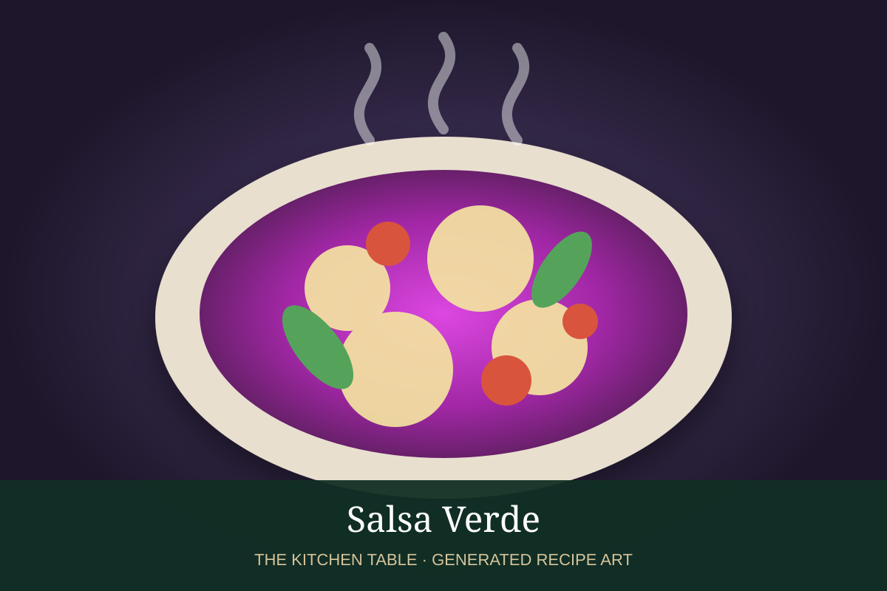

← Back to all recipes
SAUCE · MEXICAN
Salsa Verde
A bright tomatillo salsa with serrano or jalapeño, onion, garlic, cilantro, and lime.
25 minMakes about 2 cups

Photo: Umami Recipes
Ingredients
- 1 lb tomatillos, husked and rinsed
- 1 to 2 serrano or jalapeño chiles
- 1/4 white onion
- 2 garlic cloves
- 1/2 cup cilantro
- 1 tbsp lime juice
- 1 tsp kosher salt
- 1 tbsp neutral oil, optional
Preparation
- Roast or boil tomatillos and chiles until softened.
- Blend with onion, garlic, cilantro, lime, and salt.
- For a cooked salsa, heat oil in a saucepan and simmer the blended salsa 5 minutes.
- Taste and adjust acidity, salt, and chile heat.
- Serve warm or chilled.